1048A10 air cleaner filtering element - replace
- Path
- Procedures > 10 ENGINE > 1048 ENGINE AIR SUPPLY CIRCUIT > 1048A VACUUM AIR CIRCUIT > 1048A10 air cleaner filtering element - replace
- Kind
- repair procedure (removal / refitting; the operation number is the code)
- Applies to
- all engines; all production periods
- Interactive page
- https://sloeber94.github.io/elrnDB-fDbl/en/#/2584236
Applies to: engines: 1.2 8v; all production periods
 Removing
Removing
 Refitting
Refitting1. Undo the fixing bolts (1a) and release the filter casing retaining clips (1b).
2. Release the cold air intake (2a) from the retaining collar (2b).
3. Raise the air filter casing with cold air intake, releasing from oil vapour recovery sleeve (3a), then remove assembly (3b).
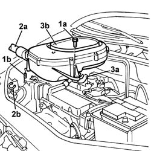
Applies to: engines: 1.2 8v; all production periods
Refitting
RemovingFit the air filter assembly and secure with the bolts, taking care to fit the engine oil vapour rubber pipe in its seat on the filter casing.
Secure the air filler pipe to the retaining clip.
Attach the retaining clip to the filter case
Applies to: engines: 1.6 16v; all production periods
Removing
RefittingOpen the bonnet.
1. Open the band (1a) and disconnect the hose (1b) carrying air to the throttle body.
2. Disconnect pipe (2a) on the air intake and unscrew air filter casing bolts (2b).
3. Remove the air filter casing from the engine compartment.
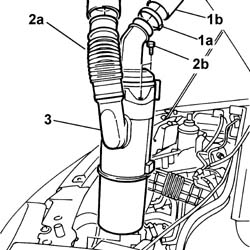
Applies to: engines: 1.6 16v; all production periods
Refitting
RemovingCheck that the filter casing is not damaged.
Position the filter casing in its original seat and tighten the bolts.
Connect the air intake pipe to the filter casing.
Connect the air delivery sleeve to the filter casing using a new collar.
Close the bonnet.
Applies to: engines: 1.3 JTD 16V; all production periods
Removing
RefittingMake sure that the ignition key is in the OFF position, then disconnect the negative battery terminal.
Description | Connector | |
|---|---|---|
- | Battery |
1. Disconnect the electrical connection from the air flow meter.
Description | Connector | |
|---|---|---|
1 | Air flow meter |
2. Loosen the collar and disconnect the air intake sleeve to the turbocharger, air flow meter side.
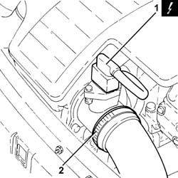
Applies to: engines: 1.3 JTD 16V; all production periods
1. Loosen the band (1a) and disconnect the hose (1b) from the air intake.
2. Remove the air filter (2a) complete with air flow meter (2b) releasing it firstly from the pegs underneath and then from the rear fastening.
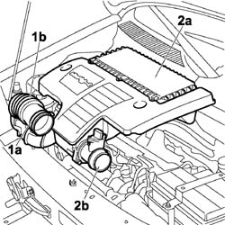
Applies to: engines: 1.3 JTD 16V; all production periods
1. Working at the bench, undo the bolts (1a) and remove the air flow meter (1b) from the air filter.
2. Disconnect and remove the cold air intake for the air filter.
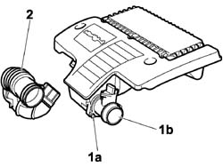
Applies to: engines: 1.3 JTD 16V; all production periods
Refitting
RemovingPosition the cold air intake for the air filter and connect.
Place the air flow meter back in its housing and secure it using the bolts.
Position the air filter in its seat with the air flow meter, secure to the rear fastening and then to the underlying pins.
Connect the flexible sleeve to the air intake on the crossmember and tighten the retaining collar.
Connect the air intake sleeve to the turbocharger, air flow meter side, and tighten the collar.
Connect the electrical connection to the air flow meter.
Description | Connector | |
|---|---|---|
- | Air flow meter |
Connect the negative battery terminal.
Description | Connector | |
|---|---|---|
- | Battery |
Applies to: engines: 1.9 DIESEL; all production periods
Removing
RefittingOp. 5530B52 BATTERY SUPPORT/DRIP TRAY - R.R.
1. Disconnect the air pipe to the intake manifold from the attachment on the filter case.
2. Unscrew bolts (2a) securing the bracket, disconnect the integral throttle body actuator electrical connection (2b) and disconnect air intake pipe (2c) from the filter casing.
3. Disconnect the vacuum pipe for the integral throttle body actuator.
4. Remove the air filter casing assembly.
Description | Connector | |
|---|---|---|
2b | Throttle body solenoid valve |
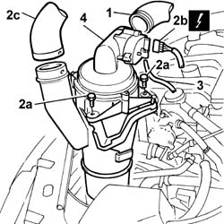
Applies to: engines: 1.9 DIESEL; all production periods
Refitting
RemovingRemove the air filter casing assembly.
Connect the vacuum pipe for the integral throttle body actuator.
Tighten the bolts securing the filter bracket and connect the cold air intake pipe to the casing.
Connect the electrical connection for the integrated throttle casing actuator.
Description | Connector | |
|---|---|---|
2b | Throttle body solenoid valve |
Connect the air pipe to the intake manifold on the air filter casing.
Applies to: engines: 1.9 JTD 8V; all production periods
Removing
RefittingPosition the vehicle on a lift.
Proceed with the removal
Proceed with the removal
Op. 5530B52 BATTERY SUPPORT/DRIP TRAY - R.R..
Proceed with the removal
Op. 7055B54 PROTECTION/GUARD UNDER ENGINE - R.R..
1. Loosen the band (1a) and disconnect the T connection (1b) from the air intake sleeve to the turbocharger.
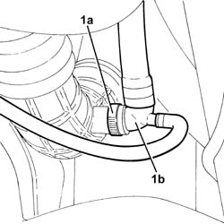
Applies to: engines: 1.9 JTD 8V; all production periods
1. Loosen the band (1a) and disconnect the turbocharger air inlet hose (1b), turbocharger side.
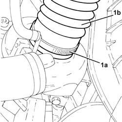
Applies to: engines: 1.9 JTD 8V; all production periods
1. Disconnect the electrical connection from the air flow meter.
Description | Connector | |
|---|---|---|
1 | Air flow meter |
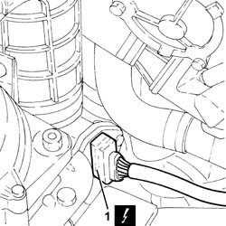
Applies to: engines: 1.9 JTD 8V; all production periods
1. Loosen collar (1a) and remove the air intake sleeves to turbocharger (1b) complete with air flow meter (1c).
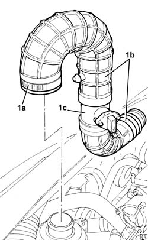
Applies to: engines: 1.9 JTD 8V; all production periods
1. Unscrew nut (1a) and bolt (1b) securing the air intake for the air filter.
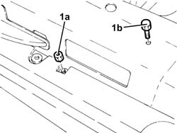
Applies to: engines: 1.9 JTD 8V; all production periods
1. Unscrew nuts (1a) and remove the air filter (1b) complete with air intake sleeve from intake to filter (1c) and cold air intake for air filter (1d).
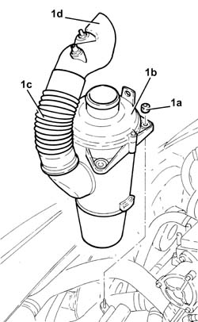
Applies to: engines: 1.9 JTD 8V; all production periods
1. Working at the bench, separate air filter (1a), air intake sleeve from intake to filter (1b) and cold air intake for air filter (1c).
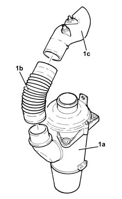
Applies to: engines: 1.9 JTD 8V; all production periods
Refitting
RemovingWorking at the bench, join the air intake sleeve from intake to filter and cold air intake for air filter.
Refit the air filter with air intake sleeve from intake to filter and cold air intake for air filter, then secure with nuts.
Unscrew nut and bolt securing the air intake for the air filter.
Refit the air intake sleeves to the turbocharger in their seats with the air flow meter and tighten the collar.
Connect the electrical connection to the air flow meter.
Connect the turbocharger air inlet hose, turbocharger side, and tighten the band.
Connect the T-connection to the turbocharger air inlet hose and tighten the band.
Proceed with the refitting
Op. 7055B54 PROTECTION/GUARD UNDER ENGINE - R.R..
Proceed with the refitting
Op. 5530B52 BATTERY SUPPORT/DRIP TRAY - R.R..
Proceed with the refitting
Remove the vehicle from the lift.
Applies to: engines: 1.4 8v; all production periods
Removing
Refitting1. Undo the bolts and lift up the air filter.
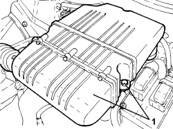
Applies to: engines: 1.4 8v; all production periods
1. Loosen the colllar and disconnect the oil vapour pipes.
2. Disconnect the vacuum pipe.
- Remove the air filter complete with cold air intake.
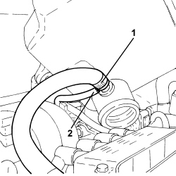
Applies to: engines: 1.4 8v; all production periods
Refitting
Removing- Connect the vacuum pipe.
- Connect the oil vapour pipe.
- Refit the air filter with the cold air intake and secure it using the bolts.
Applies to: engines: 1.9 JTD 8V; production: da 12/03; only with equipment: MY 2005
Removing
RefittingPosition the vehicle on a lift.
Proceed with the removal
Proceed with the removal
Op. 7055B08 GRILLE (ONE) ON FRONT BUMPER - R.R
Proceed with the removal
Op. 7055B54 PROTECTION/GUARD UNDER ENGINE - R.R.
1. Loosen the band (1a) and disconnect the T connection (1b) from the air intake sleeve to the turbocharger.
Applies to: engines: 1.9 JTD 8V; production: da 12/03; only with equipment: MY 2005
1. Loosen the band (1a) and disconnect the turbocharger air inlet hose (1b), turbocharger side.
Applies to: engines: 1.9 JTD 8V; production: da 12/03; only with equipment: MY 2005
1. Disconnect the electrical connection from the air flow meter.
Description | Connector | |
|---|---|---|
1 | Air flow meter |
Applies to: engines: 1.9 JTD 8V; production: da 12/03; only with equipment: MY 2005
1. Loosen collar (1a) and remove the air intake sleeves to turbocharger (1b) complete with air flow meter (1c).
Applies to: engines: 1.9 JTD 8V; production: da 12/03; only with equipment: MY 2005
1. Unscrew nut (1a) and bolt (1b) securing the air intake for the air filter.

Applies to: engines: 1.9 JTD 8V; production: da 12/03; only with equipment: MY 2005
1. Unscrew nuts (1a) and remove the air filter (1b) complete with air intake sleeve from intake to filter (1c) and cold air intake for air filter (1d).
Applies to: engines: 1.9 JTD 8V; production: da 12/03; only with equipment: MY 2005
1. Working at the bench, separate air filter (1a), air intake sleeve from intake to filter (1b) and cold air intake for air filter (1c).
Applies to: engines: 1.9 JTD 8V; production: da 12/03; only with equipment: MY 2005
Refitting
RemovingWorking at the bench, join the air intake sleeve from intake to filter and cold air intake for air filter.
Refit the air filter with air intake sleeve from intake to filter and cold air intake for air filter, then secure with nuts.
Unscrew nut and bolt securing the air intake for the air filter.
Refit the air intake sleeves to the turbocharger in their seats with the air flow meter and tighten the collar.
Connect the electrical connection to the air flow meter.
Connect the turbocharger air inlet hose, turbocharger side, and tighten the band.
Connect the T-connection to the turbocharger air inlet hose and tighten the band.
Proceed with the refitting
Op. 7055B54 PROTECTION/GUARD UNDER ENGINE - R.R.
Op. 7055B08 GRILLE (ONE) ON FRONT BUMPER - R.R
Proceed with the refitting
Op. 5530B52 BATTERY SUPPORT/DRIP TRAY - R.R.
Proceed with the refitting
Remove the vehicle from the lift.
Topics linked from this page (7)
- 5530B10 battery - r+r
- 5530B52 Battery DRIP TRAY/SUPPORT - R.R.
- 7055B08 GRILLE (ONE) ON FRONT BUMPER - R.R
- 7055B54 under-engine guard - r r
- A001 BATTERY
- K041 AIR FLOW METER
- L62 BUTTERFLY CASING SOLENOID VALVE ( ENGINE )
Topics that link to this page (81)
- B13 ENGINE STARTS WITH DIFFICULTY'
- 0010T20 coolant change
- 0510A20 timing gear with belt drive - check - carry out operation with cam cover(s) removed and tappets adjusted
- 0510A30 cam lift - check with cam cover(s) removed
- 1004B10 POWER UNIT WITH MANUAL GEARBOX - R.R
- 1016A20 single cam cover - r + r and replace gasket
- 1016C10 cylinder head - r + r and replace gasket
- 1016C11 single cylinder head-r r gasket for versions with air conditioner
- 1020D12 front crank shaft oil seal cover - r + r and replace seals
- 1020D14 front crank shaft oil seal cover - r + r and replace seals for versions with oil pump on crank shaft, timing side
- 1020D16 front crankshaft oil seal cover - r+r and replace gaskets for versions with airconditioner
- 1020D18 front crank shaft cover oil seal - replace
- 1020D20 front crankshaft cover oil seal - replace for versions with air conditioner
- 1020D26 flywheel side oil seal cover - r+r
- 1024B10 engine flywheel - r + r for versions with manual gearbox
- 1024B54 ENGINE FLYWHEEL PROTECTION - R.R
- 1028H20 piston with connecting rod - r r
- 1028H21 piston with connecting rod - r r
- 1032B10 toothed timing belt - r + r for timing adjustment or replacement
- 1032B14 toothed timing belt - r + r for timing adjustment or replacement versions with air conditioner
- 1032B14 TOOTHED TIMING BELT - R + R FOR TIMING ADJUSTMENT OR REPLACEMENT VERSIONS WITH AIR CONDITIONING
- 1032B46 toothed drive pulley - r + r
- 1032B47 toothed drive pulley - r r for versions with air conditioner
- 1032B52 toothed driven pulley (one) - r + r
- 1032B53 driven toothed pulley (one) - r r for versions with air conditioner
- 1032B60 bolt pulley - r r
- 1032B62 TIMING BELT TOOTHED PULLEY - R.R. FOR VERSIONS WITH AIR CONDITIONING
- 1032C18 mobile timing system tensioner - r + r for 24 valve engines
- 1032C19 mobile timing belt tensioner - r r for versions with air conditioner
- 1032D34 timing system guard assemblies - r + r
- 1036B10 overhead camshaft - r r on vehicle
- 1036B32 camshaft seal support with ignition coil r + r including seal replacement
- 1036C39 PHASE TRANSFORMER ON INLET CAMSHAFT IN CYLINDER HEAD - R.R.
- 1036H10 valve tappets - check and adjust clearance
- 1036H14 valve tappets - check clearance
- 1036H18 VALVE TAPPETS - Adjust. following clearance check
- 1040B32 front fuel delivery line - r r
- 1048B50 turbo charger intercooler - r + r
- 1056B14 THROTTLE CASE - R + R
- 1056B44 AIR PRESSURE SENSOR - R + R
- 1056B60 single fuel manifold pipe, with injectors - r + r
- 1056B82 injection/ignition system e.c.u. (one) - r + r
- 1056B90 system cable bundle - r + r
- 1068A10 accelerator pedal control - check, adjust if necessary and lubricate
- 1068A15 accelerator pedal - r r for rhd versions
- 1068A10 accelerator control cable - r + r
- 1072B10 inlet manifold - r + r and replace seal
- 1072B50 sleeves connecting air capacity box to inlet manifold is - r+r
- 1072C16 exhaust manifold with catalytic converter - r r
- 1072C44 exhaust manifold heat shield on bulkhead - r+r
- 1080B40 CATALYTIC PRE-CONVERTER - R.R.
- 1080C10 e.g.r. valve - r + r
- 1080D24 engine oil vapour intake pipe - r + r
- 1080E28 enablement solenoid for flow of fuel vapour to inlet - r+r
- 1080E62 pipe from fuel vapour separator to solenoid - r r
- 1084B50 timing mount oil pipe - r r
- 1088B20 engine cooling radiator - r + r
- 1088B24 engine cooling radiator - r r for air conditioned versions
- 1088B26 Engine cooling radiator AIR DUCT PROTECTION/ - R.R.
- 1088C10 water pump - r + r
- 1088C12 water pump - r+r for versions with air conditioner
- 1088C30 thermostat unit - r+r
- 1088D10 lower sleeve for coolant outlet from radiator - r + r
- 1088D14 upper sleeve for coolant inlet to radiator - r + r
- 1088D24 rigid pipe for coolant inlet to water pump - r + r
- 1088E10 radiator cooling fan - r + r
- 1088E11 fans with single engine duct - r+r
- 1092A12 crankshaft pulley - r+r for versions with air conditioner
- 1092D10 air conditioner compressor drive belt - r + r
- 1810A20 clutch - r + r
- 1820a24 thrust bearing linkage - r + r
- 2110A10 manual gearbox and differential - r + r
- 4130B10 power steering fluid resevoir r r
- 4130B46 return line to power steering reservoir (with build-in heat exchanger pipe)-r r
- 4130B42 RETURN PIPE FROM POWER STEERING BOX TO POWER STEERING FLUID RESEVIOR - R.R.
- 5040A20 air conditioner compressor - r+r - includes fluid level check and top up if necessary
- 5505C26 bonnet wiring - r r
- 5505C28 intergrated engine bay and abs system wiring - r r
- 5510C14 ignition coil/s - r+r
- 5510D10 spark plugs - r+r
- 5510D14 spark plug cable lead bundle - r+r